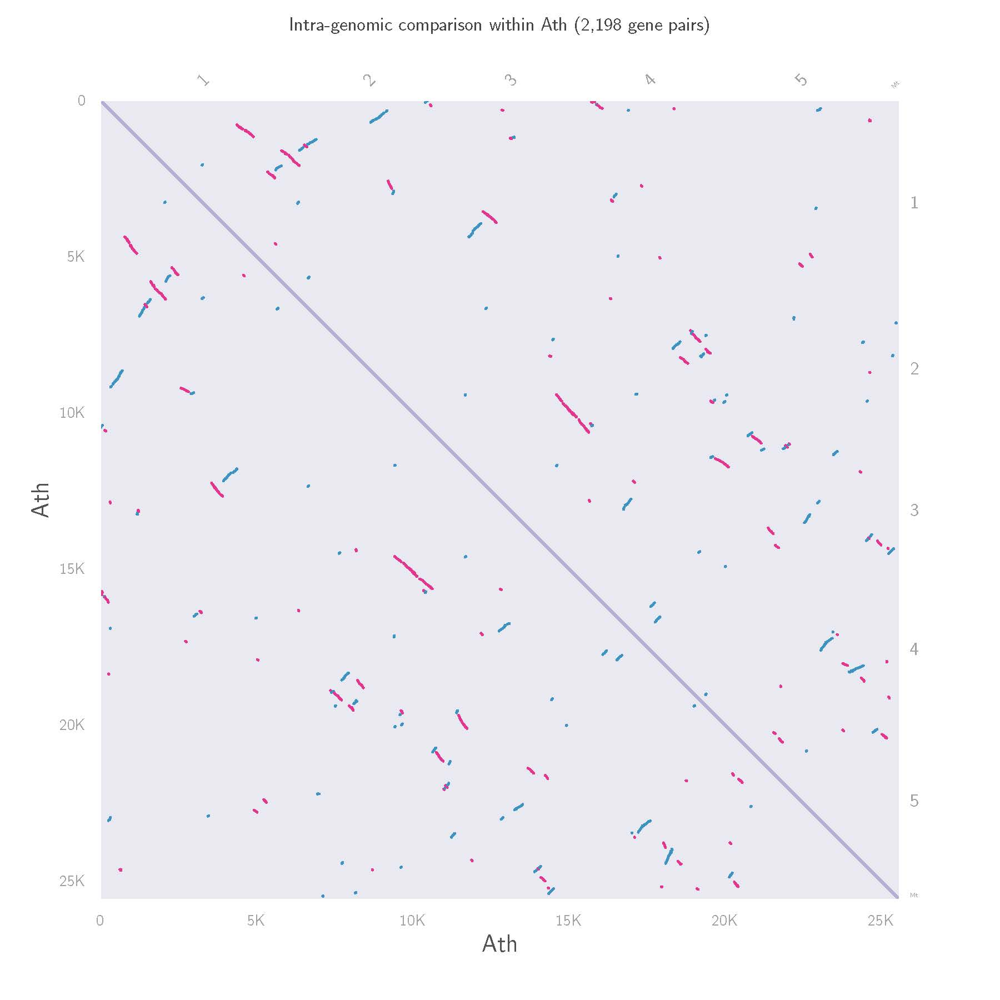
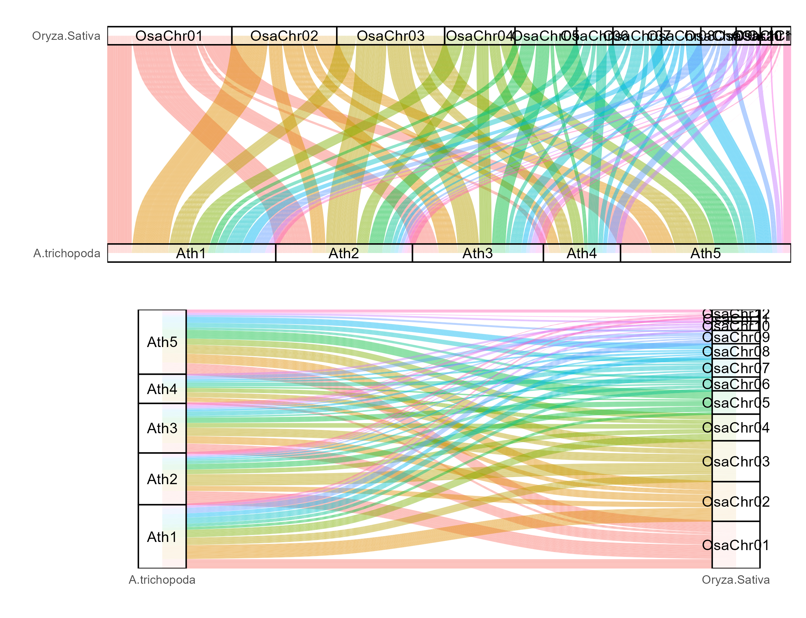
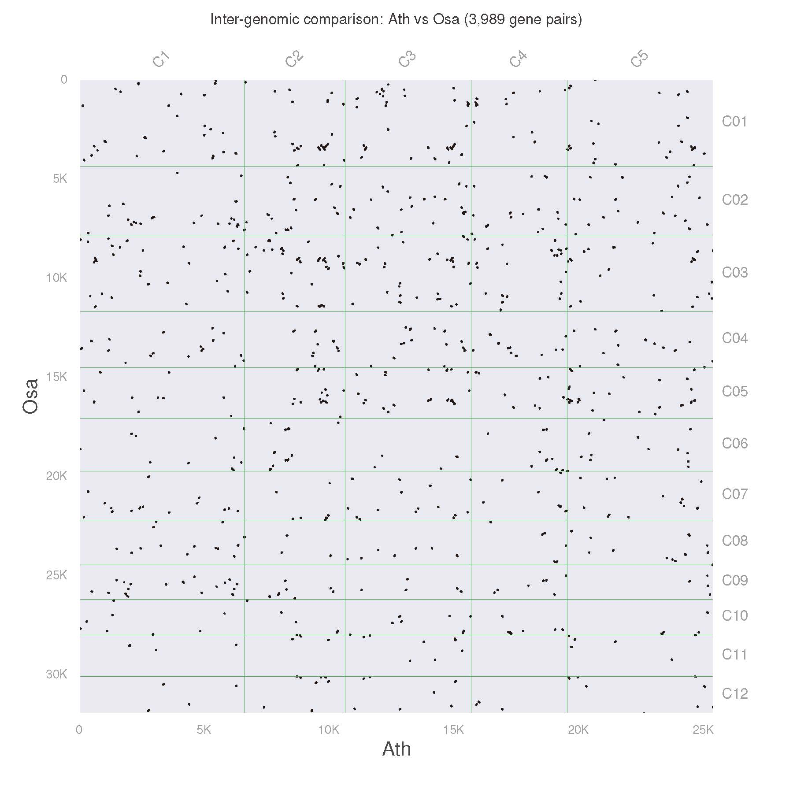
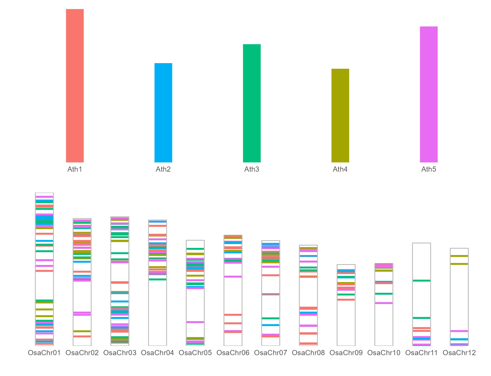
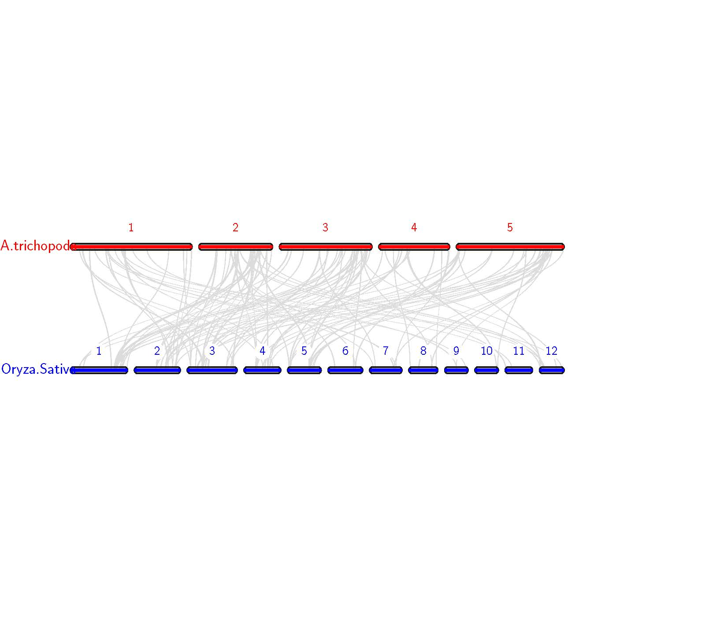
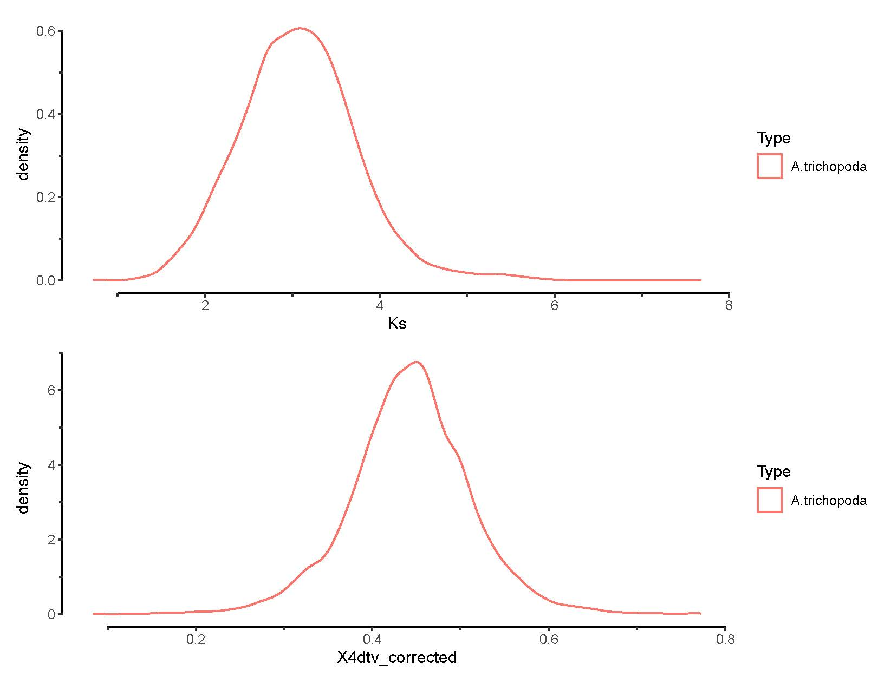
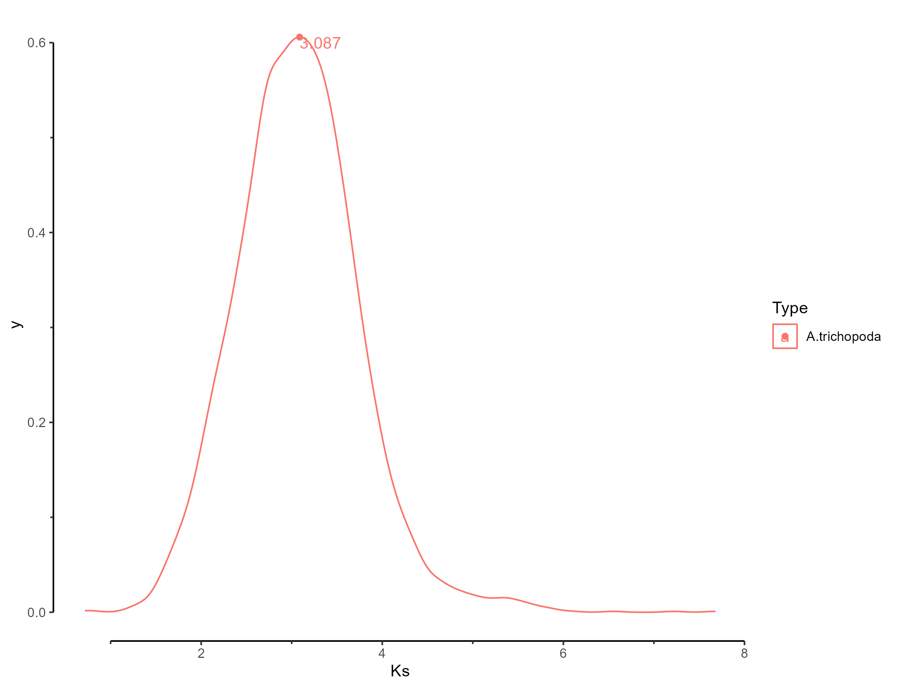
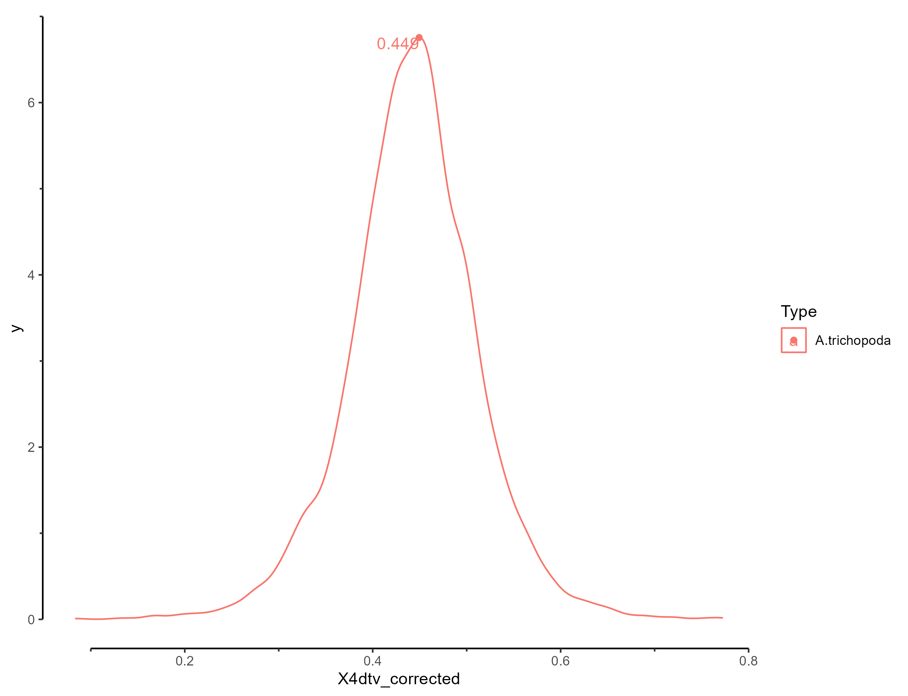

Example
demo for use KK4D
download demo data from https://doi.org/10.6084/m9.figshare.25060220.v1.
Input file list
- Ath.genome.fa.gz
- Ath.gff3.gz
- IRGSP.cds.fa.gz
- IRGSP.pep.fa.gz
- IRGSPRAP.gff3.gz
From genome file get the protein and CDS sequence files for Arabidopsis
gzip -d Ath.genome.fa.gz
gzip -d Ath.gff3.gz
bash genome2cdspep.sh Ath.genome.fa Ath.gff3 Ath .
This will output the file Ath.pep and Ath.cds.
Please remember that each new analysis of a different genome must be in a new folder, otherwise it may cause errors.
example1:Comparative analysis of one genomes. (Arabidopsis thaliana)
mkdir Ath_result
cd Ath_result
mv ../Ath.pep .
mv ../Ath.cds .
mv ../Ath.gff3 .
KK4D.sh all -group 1 -cpu 24 -key ID -type mRNA -sample A.thaliana -abbr Ath -gff3 Ath.gff3 -protein Ath.pep -cds Ath.cds -chrnum 5
24 CPU threads were used above
output file list


- Ath_Ath.homolog
- All.Ks_peak.csv
- All.X4dtv_corrected_peak.csv
- Ath_Ath.kaks4DTv.csv
| x | y | peak_time | type | peak_type |
|---|---|---|---|---|
| 0.047947329 | 0.005494129 | 2.715024274 | A.thaliana | Ks |
| 0.906953311 | 1.082462082 | 51.35635961 | A.thaliana | Ks |
| 2.407495406 | 0.11673559 | 136.3247682 | A.thaliana | Ks |
Combined with the Ks distribution chart drawn above, it can be seen that the line in black font in the table is the correct peak value. The x value in this row means that the peak Ks is 0.906953311, and the following peak_time 51.35635961 indicates that the doubling of the Arabidopsis genome occurred at 51.35635961MYA (millions of years ago).
Ks peak and 4DTv peak file, please note that there may be redundant peaks in it, and users need to judge by themselves which are the final valid peaks. The default evolutionary rate λ is 7E-9. If you need to change the value of λ, you can calculate the time of your species according to the formula T=(Ks_peak/2λ). For example, if you need to change λ to 2.5e-9, then You can use T=0.906953311/(2*(2.5e-9))/(1E6) to get T=181.39066219 MYA.
example2:Comparative analysis of two genomes. (Arabidopsis thaliana and rice IRGSP1.0)
mkdir Ath_rice
cd Ath_rice
mv ../Ath.pep .
mv ../Ath.cds .
mv ../Ath.gff3 .
mv ../IRGSP.cds.fa.gz .
mv ../IRGSP.pep.fa.gz .
mv ../IRGSPRAP.gff3.gz .
KK4D.sh all -wd /pathto/Ath_rice -group 2 -cpu 32 -key ID ID -type mRNA mRNA -sample A.thaliana Oryza.Sativa -abbr Ath Osa -gff3 Ath.gff3 IRGSPRAP.gff3.gz -protein Ath.pep IRGSP.pep.fa.gz -cds Ath.cds IRGSP.cds.fa.gz -chrnum 5 12
output file list







| Seq | 4dtv_corrected | Ka | Ks | Ka/Ks |
|---|---|---|---|---|
| AT1G01340-Os06t0527100-01 | 0.517241379 | 0.325955 | 3.27552 | 0.0995124 |
| AT1G01360-Os06t0526400-00 | 0.422222222 | 0.350108 | 3.14752 | 0.111233 |
| AT1G01430-Os06t0524400-01 | 0.482352941 | 0.47486 | 2.78177 | 0.170704 |
| AT1G01440-Os06t0524300-01 | 0.444444444 | 0.713729 | 2.12416 | 0.336005 |
| AT1G01490-Os03t0126700-01 | 0.45 | 0.314753 | 3.76469 | 0.0836064 |
| AT1G01490-Os10t0532300-01 | 0.303030303 | 0.359687 | 3.56672 | 0.100845 |
| ... | ... | ... | ... | ... |
| x | y | peak_time | type | peak_type |
|---|---|---|---|---|
| 3.087357756 | 0.605837178 | 257.279813 | A.trichopoda | Ks |
| x | y | peak_time | type | peak_type |
|---|---|---|---|---|
| 0.44939236 | 6.75502253 | 37.44936336 | A.trichopoda | X4dtv_corrected |